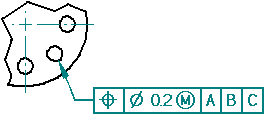
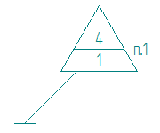
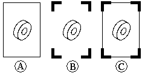

Workflow to create a part drawing
Use the following process to produce a drawing from any Solid Edge part or sheet metal document (.par and .psm file types).

-
Open a new draft document using the ISO Metric Draft template.
-
(Optional) Create additional views as needed.
-
Dimension the part views. For example, you can:
-
Use the Smart Dimension command to add dimensions.
-
Annotate the part views. For example, you can use these commands to annotate the model:
-

-

-
Place a feature control frame or datum frame.

-

-
Place a Surface Texture Symbol.

-
Automatically create centerlines and center marks in a drawing view.


-
Change the edge display in a drawing view to redraw, show, or hide part edges.
-
Use the Text command to add notes to the drawing sheet.

You also can author a numbered technical requirements list, and then reference it in drawing annotations.
Technical Requirements
(1) Break all sharp edges at 1:00 mm.
(2) Paint non-machined surfaces blue.

-
-
Save the draft document.
-
When the model changes, drawing views go out-of-date. Do either of the following:
-
Use the Update Views command to update views of the model, indicated by gray borders.

See Drawing view updates to learn about these features.
-
Use the Dimension Tracker dialog box to Review changed dimensions and annotations.
See Tracking dimension and annotation changes to learn about these features.
-